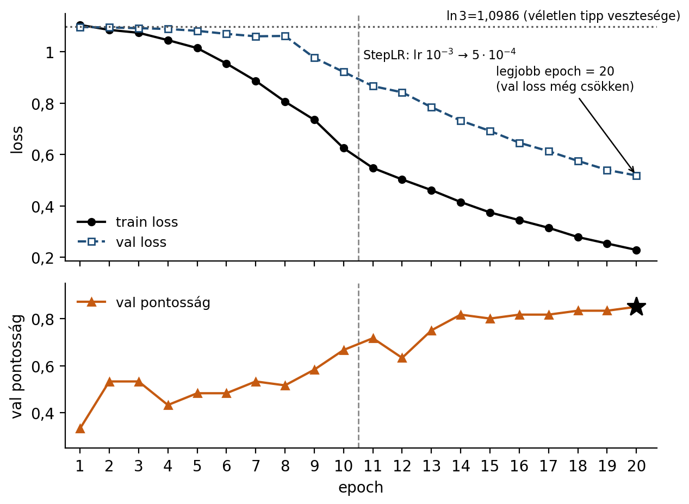

Ez a VI. ellenőrző pont: a 24.1. Tanulási görbe és hibadiagnózis–24.3. Mixed precision és nagyobb batch hibadiagnózis- és profilereszközeit egyetlen, átadható csomaggá zárjuk. A cél nem új réteg tanítása, hanem annak bizonyítása, hogy a hallgató az adatot, tanítási receptet, mérési protokollt, metrikákat és hibakezelést együtt tudja lektorálható módon kezelni. Előismeret: a 24.2. CPU/GPU profiling és helyes időmérés wall time, warmup, adatbetöltési és memóriafogalmai, a 23.4. Hibaszeletek és alkalmazási határ szelet- és páros tesztelési szerződése, a 20.4. V. ellenőrző pont: indokolt CNN-választás architektúra-döntési lapja, valamint a 12.4. III. ellenőrző pont: önállóan tanuló kis háló checkpoint- és gradiens-egyeztetési (az autograd által adott gradiens összevetése kézi, NumPy-referenciával) eljárása.
Értékelés. A közös 0–4 rubrikát, a PASS-szabályt és
a hibatípusonkénti visszautakat az 1.4. Tanulási
diagnózis és kísérleti napló „Tanulási főút és ellenőrző pontok”
szakasza adja meg: a rubrika öt dimenziója D1–D5, a szintek 0–4, a
PASS-szabály pedig mind az öt dimenzióban legalább 3-as szintet és a
labor minden assert-jének átmenetét kéri. Itt csak az
eltérés: a riport futásjegyzéke (runlog) a fő leadandó; a súlypont a D3
(adat- és mérési protokoll) és a D4 (bizonyíték és nyomon követhetőség)
rubrikadimenzió.
Induló kérdés: egy CPU-n tanított, 2979 paraméteres kis CNN vajon „megbízhatóbb-e”, mint egy GPU-n tanított nagyobb háló? Becslés: a paraméterszám önmagában nem megbízhatósági mérce; először a modell loss- és alakelőírását, azután a kísérleti protokollt kell ellenőrizni. A GPU jelenléte gyorsíthat, de nem igazol helyes modellválasztást.
A laborhoz a 20.4. V. ellenőrző pont: indokolt CNN-választás döntési lapjából a következőket választjuk: saját, kisméretű classic CNN (scratch: előtanított súlyok nélkül, a semmiből tanítva), CPU-erőforrás, a függelék A. A GlyphLab adatkészlet szakaszában leírt GlyphLab-adat. A modell:
A pontos alak- és paraméterszerződés:
| Réteg | Bemeneti alak | Kimeneti alak | Paraméterszám |
|---|---|---|---|
| Conv1: 1→8, , pad 1 | |||
| ReLU, MaxPool | 0 | ||
| Conv2: 8→16, , pad 1 | |||
| ReLU, MaxPool | 0 | ||
| Flatten | 0 | ||
| Linear: 576→3 |
Összesen paraméter. A kötelező NCHW-sorrend miatt minden térbeli alakot -ként adunk meg; a batchméret kívül áll.
A tanítási loss-szerződés a [D07] dokumentáció szerint: a modell
logitsot ad, a cél int64 osztályindex, nn.CrossEntropyLoss
előtt nem alkalmazunk külön softmaxot. Legyen
a logitmátrix és
a cél; a mean reduction (a batch elemeire átlagoló redukció)
veszteség
A softmaxos nevező minden -re az összes osztályon összegez; a célindex csak a számlálóban jelenik meg. A kimenet skalár.
Analitikus kontroll (lemma). Ha , akkor tetszőleges célra .
Levezetés: minden -re , tehát a softmax-kimenet
Így minden megfigyelésre , és a batchátlag ugyanennyi. GlyphLab esetén , tehát a kontrollérték . Ezt a labor sanity checkje (alapszintű értelmi ellenőrzés) numerikusan, abszolút tűréssel ellenőrzi.
A lemma csak a loss-modult teszteli, a modellszerkezetet nem. Ezért a labor tartalmaz egy második, zero-init alakkontrollt: a modell minden súlyát és biasát nullára állítjuk. Ekkor minden Conv-réteg kimenete azonosan nulla tetszőleges bemenetre, mert a konvolúció lineáris része nulla, a bias nulla; ezt ReLU, MaxPool és Flatten nullán változatlanul hagyja; a Linear-réteg pedig -t ad. Ezért a modell kimenete alakú, azonosan nulla. Ez a kontroll a forward-lánc működését és a deklarált kimeneti alakot ellenőrzi a rögzített bemeneti alakra, de nem bizonyítja a tanulás működését: a nulla inicializálás nem töri meg a szimmetriát, ezért tanításra nem használjuk. A labor a kontroll után a rögzített seeddel generált alapértelmezett állapotot automatikusan visszaállítja.
A tanításhoz a torch.manual_seed(20261020) hívással
rögzítjük a véletlensúly-inicializálást. A 21.1.
Inicializálás és varianciaterjedés alfejezetben levezetett
varianciafeltételt itt csak visszahívjuk: ReLU előtti konvolúciónál a
cél gyakorlat az, hogy a súly varianciája
nagyságrendű legyen, ahol
A mi modellünkben az első Conv
,
a másodiké
,
a lineáris rétegé
.
A PyTorch nn.Conv2d és nn.Linear
alapértelmezett inicializálása kaiming_uniform_
értékkel, amelynek varianciája
,
tehát nem a He-féle
;
a labor ezt az alapértelmezést nem írja felül. A gyakorlati ellenőrzést
nem a kezdeti súlyokra, hanem arra alapozza, hogy a seed, az
architektúra és a betöltött checkpoint együtt megismételhető legyen. A
[D02] szerint az azonos seed nem garantál platformok és verziók közötti
bitazonos egyezést; ezért a futásjegyzék a seedet, a könyvtárverziót és
az adatmanifesztet is rögzíti. A seed tehát szükséges, de nem elégséges
hordozhatósági garancia.
A labor AdamW-t használ
decoupled weight decayjel. Az ütemező StepLR,
step_size=10 és gamma=0.5 paraméterrel,
azaz
A 20 epochos futásban az 1–10. epoch lépésköze , a 11–20. epoché . Az ütemezés heurisztika: a konstans kezdeti ráta az első tíz epochban nagyobb lépéseket enged, a tizedik epoch utáni felezés pedig kisebb validációs ingadozást céloz. Ez nem warmup: a ráta nem nő fokozatosan, hanem szakaszonként csökken. Hogy az ütemezés valóban ezt teszi-e, nem elméleti állítás, hanem a validációs loss epochonkénti naplója dönti el; a labor minden epoch falidejét és veszteségét menti.
Az augmentáció definíciója szigorú:
olyan címkemegőrző transzformáció, amelyre a feladat értelmezése szerint
teljesül. A GlyphLab adatszerződés erre konkrét korlátot ad: a
-os
forgatás a vertical és horizontal osztályt
felcseréli; a diagonal osztály csak az egyik ferde irányt
tartalmazza, ezért tükrözés vagy forgatás új célértelmezést igényel.
Ezért a geometriai augmentáció ebben az alapkísérletben
nem címkemegőrző, és nem használjuk.
Címkemegőrző lehetőség az intenzitástérbeli perturbáció, például valamely mellett, mert az alakzat orientációját geometriailag nem változtatja. A GlyphLab-képek értéke a intervallumban van, ezért a szorzás utáni vágás is ebben az intervallumban történik. A jelen ellenőrző labor mégis augmentáció nélkül fut: az ellenőrzőpont feladata a minimális, reprodukálható alapvonal rögzítése. Az augmentáció hatását az F5 feladat külön kísérletként tervezi, hogy a két változtatás ne keveredjen.
A vizsgálat két tesztkörnyezetet különböztet meg: a clean tesztet és
a data/corrupted_test.npy fájlt, amely ugyanazon 60
tesztkép (30 jelenet × 2 nézet) zajos, fényességgradienssel módosított
változata. A corrupt fájl sorrendje a metadata teszt sorainak sorrendje;
ezért a célok páronként egyeznek. A labor három fő metrikát rögzít:
clean_acc: a clean teszt 60 képén mért pontosság;corrupt_acc: a corrupt teszt ugyanazon 60 képen mért
pontossága;matched_agreement: azon clean–corrupt kép-párok aránya,
ahol a befagyasztott modell ugyanazt az osztályt adja.A 23.4. Hibaszeletek és alkalmazási határ
alfejezetben kimondott elvet követjük: a corrupt tesztet kizárólag a
legjobb, validációs loss alapján kiválasztott checkpoint betöltése után
értékeljük; utólagos ráhangolás nincs. Az osztályszintű bontást a riport
per_class_clean és per_class_corrupt mezőkben
tárolja, mert a 60 képes összesített pontosság elfedi az osztályszintű
hibakoncentrációt. A scene-szintű bootstrapet itt nem számoljuk; a jelen
labor egyetlen seeddel jellemzi a kiválasztott receptet, és nem becsli a
training-seedek szórását.
A CPU-s futásban nincs aszinkron GPU-ütemező, ezért a 24.2. CPU/GPU profiling és helyes időmérés
CUDA-szinkronizációs szabálya nem lép be: a
time.perf_counter() két hívása közötti eltelt falidőt méri,
nem külön processzoridőt. Az első epochot warmupként (bemelegítő
futásként) kezeljük, mert a fájlrendszer-gyorsítótár, a lusta allokációk
és a könyvtár első hívásai torzíthatják; a futásjegyzék minden epoch
falidejét külön menti, így a steady-state (a bemelegítés utáni,
állandósult) szakasz elkülöníthető. A labor CPU-n,
workers=0 DataLoaderrel és
torch.set_num_threads(1) mellett fut, ezért az adatbetöltés
a fő szálon történik, és a számítás egy szálon fut; a labor egyetlen
next(iter(train_loader)) hívással méri az első batch
betöltésének falidejét is. A batch szintű aktivációmemória becslése az
alakelőírásból adódik:
esetén a legnagyobb köztes tensor a
térkép,
float32 elem. A torch.profiler [D17] részletes
operátorbontását ez a CPU-labor nem használja; itt a mérési protokoll és
a falidő összehasonlíthatósága a cél.
A checkpoint minimális szerződése a következő mezőket tartalmazza:
model: a state_dict (a modell tanulható
paramétereit és pufferjeit tartalmazó szótár), amely a betöltő oldalon
deklarált, azonos architektúrához tartozik;config: modellnév, csatornaszám, osztályszám, bemeneti
alak és seed;epoch, val_loss,
val_acc;data_manifest a
data/manifest.json relatív útja és SHA-256 lenyomata;parameter_count: betöltés utáni
konzisztenciaellenőrzéshez.A betöltés torch.load(..., weights_only=True) módon,
majd model.load_state_dict(...) strict módban történik. A
strict mód garantálja a kulcskészlet és alakok egyezését; a labor
emellett a parameter_count mezőt a jelenlegi modellel, a
data_manifest SHA-256 értékét pedig a
data/manifest.json fájllal veti össze. A hibakezelés akkor
teljes, ha ezután egy rögzített bemeneti batchre a kimeneti alakot és a
végességet is ellenőrizzük. A checkpoint önmagában nem helyettesíti a
seedet, az adatverziót és a tanítási konfigurációt; ezért a labor ezeket
a runlog.json fájlban együtt menti.
Előfeltételek. Python 3.12, a lab/
csomag telepítve (cd lab && uv sync), NumPy 2.3.5
és torch 2.14.1 (CPU). A lock fájl (lab/uv.lock) ezeket a
verziókat telepíti; a fejezetben közölt mért kimenetek a könyv ellenőrző
környezetéből származnak (Python 3.12.3, NumPy 2.5.4, pandas 3.1.0,
torch 2.15.0+cpu). A két környezet a laborokban ugyanazt a kimenetet
adta; eltérés esetén az utolsó jegyek különbözhetnek (loss kb.
,
accuracy egy megfigyelési egységnyi). Szükséges fájlok:
lab/data/images.npy, labels.npy,
metadata.csv, corrupted_test.npy és
manifest.json; futtatás:
python lab/n096_checkpoint.py. Várható futásidő CPU-n
néhány perc, a tényleges időt a futás naplózza.
A labor numerikus kimenetét a könyv környezetében lemértük (Python
3.12.3, NumPy 2.5.4, torch 2.15.0+cpu, CPU,
torch.set_num_threads(1), seed 20261020); a hallgató a
saját futtatásából ugyanezt a futásjegyzéket állítja elő. Az alábbi kód
a runlog.json futásjegyzéket írja, a kódban szereplő
0.0 értékű JSON-mező pedig a séma illusztrációja.
A lab/data/ mappa a GlyphLab-szerződés szerinti
images.npy, labels.npy,
metadata.csv, corrupted_test.npy és
manifest.json fájlokat tartalmazza; ezeket a A. függelék generálja. Futtatás a repository
gyökeréből:
python lab/n096_checkpoint.pyA szkript a Path(__file__) alapján keresi a
lab/data/ mappát, ezért a lab/ könyvtárból
(cd lab && python n096_checkpoint.py) is működik. A
kiadói csomag ezt a kódblokkot lab/n096_checkpoint.py néven
emeli ki.
# lab/n096_checkpoint.py
from pathlib import Path
import hashlib, json, math, sys, time
import numpy as np
import torch
from torch import nn
from torch.utils.data import DataLoader, TensorDataset
BASE = Path(__file__).resolve().parent
DATA = BASE / "data"
SEED = 20261020
DEVICE = torch.device("cpu")
DTYPE = torch.float32
EPOCHS = 20
BATCH = 16
LR = 1e-3
WEIGHT_DECAY = 1e-4
STEP_SIZE = 10
GAMMA = 0.5
K = 3
torch.manual_seed(SEED)
np.random.seed(SEED)
torch.set_num_threads(1)
class TinyCNN(nn.Module):
def __init__(self, in_ch=1, num_classes=K):
super().__init__()
self.features = nn.Sequential(
nn.Conv2d(in_ch, 8, 3, padding=1), nn.ReLU(), nn.MaxPool2d(2),
nn.Conv2d(8, 16, 3, padding=1), nn.ReLU(), nn.MaxPool2d(2),
nn.Flatten()
)
self.fc = nn.Linear(16 * 6 * 6, num_classes)
def forward(self, x):
return self.fc(self.features(x))
def count_params(model):
return sum(p.numel() for p in model.parameters())
def sha256_file(path):
h = hashlib.sha256()
with open(path, "rb") as f:
for chunk in iter(lambda: f.read(1 << 20), b""):
h.update(chunk)
return h.hexdigest()
def evaluate(model, loader, criterion=None):
model.eval()
total_loss = 0.0
correct = 0
n = 0
with torch.inference_mode():
for xb, yb in loader:
xb = xb.to(DEVICE, dtype=DTYPE)
yb = yb.to(DEVICE)
logits = model(xb)
if criterion is not None:
total_loss += criterion(logits, yb).item() * xb.shape[0]
correct += (logits.argmax(dim=1) == yb).sum().item()
n += xb.shape[0]
return correct / n, (total_loss / n if criterion is not None else None)
def predict_all(model, loader):
model.eval()
preds, ys = [], []
with torch.inference_mode():
for xb, yb in loader:
xb = xb.to(DEVICE, dtype=DTYPE)
yb = yb.to(DEVICE)
preds.append(model(xb).argmax(dim=1).cpu().numpy())
ys.append(yb.cpu().numpy())
return np.concatenate(preds), np.concatenate(ys)
def per_class_acc(preds, labels):
out = []
for c in range(K):
mask = labels == c
out.append(float(np.mean(preds[mask] == c)) if mask.sum() else None)
return out
def main():
criterion = nn.CrossEntropyLoss()
# 1) loss-sanity: zero logits -> ln K
z0 = torch.zeros(4, K, dtype=DTYPE, device=DEVICE)
y0 = torch.tensor([0, 1, 2, 0], device=DEVICE)
l0 = criterion(z0, y0).item()
assert abs(l0 - math.log(K)) < 1e-6, (l0, math.log(K))
print(f"[sanity] zero-logit loss = {l0:.6f} (expected {math.log(K):.6f})")
model = TinyCNN().to(DEVICE, dtype=DTYPE)
# 2) zero-init forward contract
x_dummy = torch.randn(2, 1, 24, 24, dtype=DTYPE, device=DEVICE)
default_state = {k: v.detach().clone() for k, v in model.state_dict().items()}
with torch.no_grad():
for p in model.parameters():
p.zero_()
z_zero = model(x_dummy)
assert z_zero.shape == (2, K) and torch.allclose(z_zero, torch.zeros_like(z_zero)), z_zero
model.load_state_dict(default_state)
print(f"[sanity] zero-init output {tuple(z_zero.shape)}, "
f"all zero: {bool((z_zero == 0).all())}")
# 3) adat a metadata splitje szerint
meta = np.loadtxt(DATA / "metadata.csv", delimiter=",", dtype=str, skiprows=1)
if meta.ndim != 2 or meta.shape[1] != 9:
raise ValueError("a metadata.csv nem a 9 oszlopos GlyphLab-séma")
indices = meta[:, 0].astype(np.int64)
split = meta[:, 4] # 0-tól indexelt 5. oszlop: a train/val/test split
images = np.load(DATA / "images.npy").astype(np.float32)
labels = np.load(DATA / "labels.npy").astype(np.int64)
if images.ndim != 4 or images.shape[1:] != (1, 24, 24):
raise ValueError(f"az images.npy alakja {images.shape}, várt (N,1,24,24)")
if labels.ndim != 1:
raise ValueError(f"a labels.npy alakja {labels.shape}, várt (N,)")
# A sorrendre nem támaszkodunk: az index oszlop permutációja a tömbindexeknek.
if not (len(meta) == len(images) == len(labels)):
raise ValueError("a metadata.csv és a tömbök hossza eltér")
if not np.array_equal(np.sort(indices), np.arange(len(images))):
raise ValueError("a metadata.csv index oszlopa nem permutációja a tömbindexeknek")
def make_loader(split_name, shuffle=False):
idx = indices[split == split_name]
x = torch.from_numpy(images[idx]).to(DEVICE, dtype=DTYPE)
y = torch.from_numpy(labels[idx]).to(DEVICE)
ds = TensorDataset(x, y)
gen = torch.Generator().manual_seed(SEED) if shuffle else None
return DataLoader(ds, batch_size=BATCH, shuffle=shuffle, generator=gen)
train_loader = make_loader("train", shuffle=True)
val_loader = make_loader("val")
test_loader = make_loader("test")
t = time.perf_counter()
next(iter(train_loader))
data_load_s = time.perf_counter() - t
optimizer = torch.optim.AdamW(model.parameters(), lr=LR, weight_decay=WEIGHT_DECAY)
scheduler = torch.optim.lr_scheduler.StepLR(optimizer, step_size=STEP_SIZE, gamma=GAMMA)
manifest_sha = sha256_file(DATA / "manifest.json")
run = {
"config": {"seed": SEED, "device": str(DEVICE), "dtype": str(DTYPE),
"epochs": EPOCHS, "batch": BATCH, "lr": LR,
"weight_decay": WEIGHT_DECAY,
"schedule": {"step_size": STEP_SIZE, "gamma": GAMMA}},
"environment": {"python": sys.version.split()[0],
"torch": torch.__version__,
"numpy": np.__version__},
"data_manifest": {"path": "data/manifest.json",
"sha256": manifest_sha},
"parameter_count": count_params(model),
"data_load_s": data_load_s,
"epochs": []
}
best = {"epoch": None, "val_loss": float("inf"), "val_acc": None}
total_start = time.perf_counter()
for ep in range(1, EPOCHS + 1):
model.train()
t0 = time.perf_counter()
total_loss = 0.0
n = 0
for xb, yb in train_loader:
xb = xb.to(DEVICE, dtype=DTYPE)
yb = yb.to(DEVICE)
optimizer.zero_grad(set_to_none=True)
loss = criterion(model(xb), yb)
loss.backward()
optimizer.step()
total_loss += loss.item() * xb.shape[0]
n += xb.shape[0]
train_loss = total_loss / n
val_acc, val_loss = evaluate(model, val_loader, criterion)
if not math.isfinite(val_loss):
raise FloatingPointError(f"nem véges validációs loss a(z) {ep}. epochban")
scheduler.step()
wall = time.perf_counter() - t0
run["epochs"].append({"epoch": ep, "train_loss": train_loss,
"val_loss": val_loss, "val_acc": val_acc,
"wall_s": wall})
print(f"epoch {ep:02d} train {train_loss:.4f} val {val_loss:.4f} "
f"acc {val_acc:.4f} {wall:.3f}s")
if val_loss < best["val_loss"]:
best = {"epoch": ep, "val_loss": val_loss, "val_acc": val_acc}
torch.save({
"model": model.state_dict(),
"config": {"name": "TinyCNN", "in_ch": 1, "num_classes": K,
"input_shape": [1, 24, 24], "seed": SEED},
"epoch": ep,
"val_loss": val_loss,
"val_acc": val_acc,
"data_manifest": {"path": "data/manifest.json",
"sha256": manifest_sha},
"parameter_count": count_params(model)
}, BASE / "best.pt")
if best["epoch"] is None:
raise RuntimeError("egyetlen epoch sem adott jobb validációs loss-t; nincs best.pt")
ckpt = torch.load(BASE / "best.pt", map_location="cpu", weights_only=True)
if ckpt["parameter_count"] != count_params(model):
raise ValueError("a checkpoint parameter_count mezője nem egyezik a modellel")
if ckpt["data_manifest"]["sha256"] != manifest_sha:
raise ValueError("a checkpoint adatmanifesztje nem a jelenlegi manifest.json")
model.load_state_dict(ckpt["model"])
model.eval()
clean_preds, clean_ys = predict_all(model, test_loader)
clean_acc = float(np.mean(clean_preds == clean_ys))
corrupt_np = np.load(DATA / "corrupted_test.npy").astype(np.float32)
test_idx = indices[split == "test"]
if corrupt_np.ndim != 4 or corrupt_np.shape[1:] != (1, 24, 24):
raise ValueError(f"a corrupted_test.npy alakja {corrupt_np.shape}, várt (N,1,24,24)")
if len(corrupt_np) != len(test_idx):
raise ValueError("a corrupt teszt hossza nem egyezik a test splittel")
# A corrupt teszt a metadata test sorainak sorrendjében van
# (manifest.json: corrupt_order), ezért a test_loader sorrendjéhez párosul.
corrupt_x = torch.from_numpy(corrupt_np).to(DEVICE, dtype=DTYPE)
corrupt_y = torch.from_numpy(labels[test_idx]).to(DEVICE)
corrupt_loader = DataLoader(TensorDataset(corrupt_x, corrupt_y),
batch_size=BATCH, shuffle=False)
corrupt_preds, corrupt_ys = predict_all(model, corrupt_loader)
corrupt_acc = float(np.mean(corrupt_preds == corrupt_ys))
matched_agreement = float(np.mean(clean_preds == corrupt_preds))
run["best"] = best
run["test"] = {
"clean_acc": clean_acc,
"corrupt_acc": corrupt_acc,
"matched_agreement": matched_agreement,
"per_class_clean": per_class_acc(clean_preds, clean_ys),
"per_class_corrupt": per_class_acc(corrupt_preds, corrupt_ys)
}
run["total_wall_s"] = time.perf_counter() - total_start
with open(BASE / "runlog.json", "w", encoding="utf-8") as f:
json.dump(run, f, indent=2)
print(json.dumps(run["test"], indent=2))
if __name__ == "__main__":
main()A mért futás kimenete:
[sanity] zero-logit loss = 1.098612 (expected 1.098612)
[sanity] zero-init output (2, 3), all zero: True
epoch 01 train 1.1048 val 1.0965 acc 0.3333 0.028s
epoch 02 train 1.0854 val 1.0949 acc 0.5333 0.025s
epoch 03 train 1.0741 val 1.0921 acc 0.5333 0.025s
epoch 04 train 1.0455 val 1.0888 acc 0.4333 0.025s
epoch 05 train 1.0146 val 1.0818 acc 0.4833 0.025s
epoch 06 train 0.9544 val 1.0698 acc 0.4833 0.024s
epoch 07 train 0.8868 val 1.0604 acc 0.5333 0.025s
epoch 08 train 0.8059 val 1.0618 acc 0.5167 0.026s
epoch 09 train 0.7350 val 0.9767 acc 0.5833 0.025s
epoch 10 train 0.6248 val 0.9217 acc 0.6667 0.025s
epoch 11 train 0.5476 val 0.8664 acc 0.7167 0.025s
epoch 12 train 0.5028 val 0.8421 acc 0.6333 0.025s
epoch 13 train 0.4612 val 0.7844 acc 0.7500 0.025s
epoch 14 train 0.4148 val 0.7320 acc 0.8167 0.024s
epoch 15 train 0.3743 val 0.6917 acc 0.8000 0.024s
epoch 16 train 0.3442 val 0.6458 acc 0.8167 0.027s
epoch 17 train 0.3144 val 0.6128 acc 0.8167 0.026s
epoch 18 train 0.2784 val 0.5751 acc 0.8333 0.025s
epoch 19 train 0.2532 val 0.5398 acc 0.8333 0.025s
epoch 20 train 0.2281 val 0.5182 acc 0.8500 0.025s
{
"clean_acc": 0.9333333333333333,
"corrupt_acc": 0.85,
"matched_agreement": 0.9166666666666666,
"per_class_clean": [
1.0,
0.8,
1.0
],
"per_class_corrupt": [
0.85,
0.7,
1.0
]
}Referenciaértékek: a validációs loss 1,0965-ről 0,5182-re csökken; a
clean teszt 0,9333, a corrupt 0,85, a matched_agreement
0,9167. A mért futást megismételtük: a loss- és pontosságértékek a
megjelenített négy tizedesjegyig egyeztek, csak a falidők tértek el
kisszámú ezredmásodperccel.

A kód által létrehozott runlog.json szerkezete:
{
"config": {"seed": 20261020, "device": "cpu", "dtype": "torch.float32",
"epochs": 20, "batch": 16, "lr": 0.001,
"weight_decay": 0.0001,
"schedule": {"step_size": 10, "gamma": 0.5}},
"environment": {"python": "3.12.3", "torch": "2.15.0+cpu",
"numpy": "2.5.4"},
"data_manifest": {"path": "data/manifest.json",
"sha256": "<manifest.json SHA-256>"},
"parameter_count": 2979,
"data_load_s": 0.0,
"epochs": [{"epoch": 1, "train_loss": 0.0, "val_loss": 0.0,
"val_acc": 0.0, "wall_s": 0.0}],
"best": {"epoch": 1, "val_loss": 0.0, "val_acc": 0.0},
"test": {"clean_acc": 0.0, "corrupt_acc": 0.0, "matched_agreement": 0.0,
"per_class_clean": [0.0, 0.0, 0.0],
"per_class_corrupt": [0.0, 0.0, 0.0]},
"total_wall_s": 0.0
}A fenti 0.0 és
<manifest.json SHA-256> értékek helykitöltők; a mért
futás kimenete fentebb látható. A runlog.json a teljes 20
epochos listát tartalmazza, valamint a config, az
environment és a data_manifest mezőt; a mért
futásban a best a 20. epoch (val_loss 0,5182,
val_acc 0,85), a test pedig a fenti
clean/corrupt értékeket adja.
Az F5 kísérlettervezési feladat kötelező sablonja. A válaszban adja meg a hipotézist; a független és a függő változót; a kontrollt vagy baseline-t; a modellarchitektúrát, az optimalizálót, a tanulási rátát és az epochszámot; a seedek számát és konkrét értékét; a metrikát és a megfigyelési egységet; az előre rögzített, számmal megfogalmazott döntési szabályt és a statisztikai próbát; valamint az erőforráskeretet. Ha a feladat nem tanít modellt, a tanítási recept helyett az adott eljárás kontrollját, döntési szabályát és erőforrását kell kitölteni.
F1 (fogalmi, nehézség 1). Mondja ki a labor
loss-szerződésének három elemét: reduction, logits vagy valószínűség,
target típusa. Adjon ellenpéldát arra, amikor a softmax előzetes
alkalmazása más numerikus eredményt ad, mint a szerződéses
CrossEntropyLoss logits-bemenettel.
F2 (levezetési, nehézség 2). Bizonyítsa be, hogy a
labor TinyCNN modellje minden súly és bias nullázása esetén
tetszőleges
bemenetre
kimenetet ad. Pontosan adja meg, mit mutat és mit nem mutat ez a
kontroll.
F3 (implementációs, nehézség 2). Írjon
lab/check_best.py szkriptet, amely a best.pt
betöltése után ellenőrzi: (a) a config mező név- és
alakelőírását; (b) a state_dict kulcskészletét; (c) egy
rögzített torch.randn(4,1,24,24) bemenetre a kimeneti
alakot és végességet. Adja meg a futtatási parancsot. Előfeltétel: a
labor tanítási lépése lefutott, és létrehozta a best.pt
fájlt; enélkül a szkript RuntimeError-ral áll le. Figyelem:
a n096_checkpoint importja modul szinten állíthat seedet,
ezért a szkript a saját seedjét az import után, explicit módon rögzítse,
ha a torch.randn bemenet ismételhető kell legyen.
F4 (hibakeresési, nehézség 2). A hallgatótárs a tanítási ciklusban minden epoch után a clean test pontosságát használja a legjobb epoch kiválasztására, majd a betöltött modellen a corrupt tesztet értékeli. Lokalizálja a hibát, írja le a következményét, és javítsa a protokollt.
F5 (kísérleti/transzfer, nehézség 3). Tervezzen egy
kísérletet, amely az intenzitás-augmentáció
(g(x)=clamp(ux),
)
hatását méri a GlyphLab clean és corrupt tesztjén úgy, hogy a corrupt
tesztet nem használja modellválasztásra. Adja meg a protokollt, a
baseline-t, a metrikát és legalább két érvényességi korlátot.
F1 megoldás. A szerződés: (1) a loss mean reduction,
azaz a batch megfigyeléseinek átlaga; (2) a bemenet nyers logits, mert a
CrossEntropyLoss magában végzi a log-softmaxot; (3) a
target int64 osztályindex, egy megfigyeléshez egy skalár.
Ellenpélda: legyen
,
logit
és helyes cél
.
A szerződéses loss:
.
Ha előbb softmaxot alkalmazunk,
,
majd ezt logitnak tekintve a második softmax a helyes osztályra
,
a loss
.
A dupla softmax tehát számottevően nagyobb, értelmetlen értéket ad (a
helyes
helyett
).
F2 megoldás. Rétegről rétegre: a Conv-réteg
súllyal és
biassal bármely bemenetre
kimenetet ad, mert a kernel-összeg minden tagja
.
A ReLU nullpontbeli értéke konvenció szerint
,
a nn.ReLU() implementációja itt
-t
ad; a MaxPool nulla bemeneten nullát; a Flatten az azonosan nulla tensor
alakját
-ra
rendezi, értéke nulla; a Linear
.
Ezért a kimenet
nulla. A bizonyítás a forward kompozíció működését igazolja bármely, a
deklarált
alakú inputra. Nem mutatja, hogy a modell nemtriviális gradienseket ad,
és nem mutatja a tanulás sikerét; a zero init nem töri meg a
szimmetriát, ezért tanításra alkalmatlan. A labor ezért csak sanity
checkként használja, majd visszaállítja a seedelt alapállapotot.
F3 megoldás.
# lab/check_best.py
from pathlib import Path
import torch
from n096_checkpoint import TinyCNN, DEVICE, DTYPE
BASE = Path(__file__).resolve().parent
ckpt = torch.load(BASE / "best.pt", map_location="cpu", weights_only=True)
cfg = ckpt["config"]
assert cfg["name"] == "TinyCNN"
assert cfg["in_ch"] == 1 and cfg["num_classes"] == 3
assert cfg["input_shape"] == [1, 24, 24]
model = TinyCNN(cfg["in_ch"], cfg["num_classes"]).to(DEVICE, dtype=DTYPE)
model.load_state_dict(ckpt["model"])
expected_keys = {
"features.0.weight", "features.0.bias",
"features.3.weight", "features.3.bias",
"fc.weight", "fc.bias"
}
assert set(ckpt["model"].keys()) == expected_keys, set(ckpt["model"].keys())
x = torch.randn(4, 1, 24, 24, dtype=DTYPE, device=DEVICE)
with torch.inference_mode():
y = model(x)
assert y.shape == (4, 3)
assert torch.isfinite(y).all()
print("check OK:", tuple(y.shape), sum(p.numel() for p in model.parameters()))Futtatás: cd lab && python check_best.py. A mért
kimenet check OK: (4, 3) 2979. A kontroll szigorú: a strict
load_state_dict önmagában is hibát dob, ha kulcs vagy alak
eltér; a kimeneti alakellenőrzés a 24×24 bemeneti séma és a
háromosztályos kimenet együttes tesztje. A tolerancia itt szükségtelen,
mert alak- és végességellenőrzésről van szó, nem lebegőpontos
egyezésről. A szkript előfeltétele a korábbi tanítási futás
best.pt fájlja; a n096_checkpoint importja
modul szinten is fogyaszthat RNG-t, ezért a rögzített
torch.randn bemenethez a szkript a saját seedjét az import
után állítja be, különben a „rögzített” bemenet a modul
importsorrendjétől függene.
F4 megoldás. A hiba a modellválasztás
adatszivárgása: a clean test a tanítási ciklus során befolyásolja az
epochválasztást, ezért a clean test többé nem független teszt. A
következmény kettős: a clean és corrupt teszten mért pontosság
szelekciós torzítást kap, és a választott epoch általában optimistább,
mint a tényleges generalizáció. A korrekt protokoll: a legjobb epochot
kizárólag val_loss alapján kell választani; a clean testet
csak a befagyasztott checkpoint betöltése után, egyszer szabad
értékelni; a corrupt tesztet ugyancsak csak ezután, páros clean-korrupt
összehasonlítással. Az újraindítás indoklása: a hibás futásban a test
már részt vett a modellválasztásban, ezért a rajta mért érték nem
tekinthető független becslésnek. Ha minden epoch checkpointja és a
validációs loss is megmaradt, a választás utólag is megismételhető val
loss alapján, és a test csak egyszer, a végén értékelhető; ilyenkor nem
feltétlenül kell újratanítani. Újratanítás akkor szükséges, ha a
checkpointok nem maradtak meg, vagy ha a testinformáció más döntésbe
(hiperparaméter, early stopping, adat-előfeldolgozás) is beszivárgott,
mert ezeket utólag nem lehet „visszavonni”.
F5 megoldás. Protokoll: (1) baseline = a fenti
TinyCNN augmentáció nélkül; kezelés = ugyanaz a modell,
ugyanaz a kezdő seed, de minden egyes training képhez külön
skalárral szorzott, [0,1]-re vágott kép (mintánkénti, nem
batchenkénti skalár; a batchenkénti közös skalár más kezelést jelentene,
mert a batch összes képét azonos mértékben torzítaná). (2) A
training/val/test split a GlyphLab szerződéses 120/30/30 scene marad; a
val loss alapján mindkét modellnél külön epochválasztás. (3) A
kiértékelés a befagyasztott modelleken clean és corrupt teszten
clean_acc, corrupt_acc,
matched_agreement és osztályszintű bontás. (4) A két modell
különbségét páros scene/view szinten számoljuk, mert a view-k
összetartoznak. Az „ugyanaz a seed” csak az inicializálást és a kezdeti
data order sorrendjét rögzíti: az augmentációs ág extra RNG-fogyasztása
miatt a két futás RNG-sorozata már az első augmentált batch után eltér,
ezért a seedek azonosítása nem jelenti a teljes véletlenség
azonosítását. Döntési szabály: a kezelést akkor tekintjük támogatottnak,
ha a corrupt accuracy jelenetszintű páros különbségének 95%-os bootstrap
CI-je 0 felett van, miközben a clean accuracy jelenetszintű páros
különbségének CI-je nem mutat 2 százalékpontnál nagyobb romlást;
ellenkező esetben nem állítunk javulást. Érvényességi korlát: egyetlen
seed, ezért az eredmény a training-véletlent nem választja el a kezelés
hatásától; a corrupt eloszlás csak a GlyphLab-féle zajt és
fényességgradienst reprezentálja, természetes képi shiftre nem vihető
át. Emellett az intenzitástranszformáció csak akkor címkemegőrző, ha a
feladatszerződés az orientációt a fényességtől függetlenül definiálja;
ha a későbbi adatverzió ezt megváltoztatja, a protokollt újra kell
validálni.
Hipotézis és egység: az intenzitás-augmentáció
javítja a corrupt accuracyt; a változó tényező az augmentáció be- vagy
kikapcsolása, a megfigyelési egység a scene_id.
Recept, seed, döntési küszöb és erőforrás: a
TinyCNN tanítása AdamW optimalizálóval,
,
20 epoch és 16-os batch mellett fut; a mintamegoldás egy seeddel
dolgozik, ennek értéke
,
és a korlátot a protokoll öt seedre bővítheti
(–).
A döntési szabály számszerű: a corrupt accuracy jelenetszintű páros
különbségének 95%-os bootstrap CI-je 0 felett van, miközben a clean
accuracy CI-je legfeljebb 2 százalékpontos romlást mutat. Erőforrás:
CPU, float32, két ág, egy seeddel néhány perc; a bővített
öt seedes változat tíz futás.
Gyakori tévedés: „a GPU gyorsabb, tehát a kísérlet
helyesebb.” Ellenpélda: két hallgató ugyanazt a
TinyCNN-t, ugyanazt a 120/30/30 scene splitet, ugyanazt a
batchméretet és ugyanazt a 10 epochot használja; az egyik GPU-n, a másik
CPU-n futtat. A GPU-s futás falideje rövidebb, de a validációs loss és a
modellválasztás ugyanazon a protokollon alapul, ezért a mérés
érvényessége azonos; a GPU jelenléte csak a futásidőt változtatja meg, a
mintavételi bizonytalanságot és a szelekciós torzítást nem. Ha viszont
valaki a GPU-s futásban a test accuracy-t használja epochválasztásra, az
már nem a GPU miatt más: egyszerre két dolgot változtat (hardver és
választási protokoll), ezért a két futás különbsége nem tulajdonítható
egyiknek sem.
Önellenőrző kérdések: szerepel-e a loss-szerződésben a mean reduction
és az int64 target? A corrupt tesztet tényleg csak a legjobb validációs
checkpoint betöltése után értékeli a kód? A runlog.json
tartalmazza-e a seedet, az adatmanifesztet és az ütemezést? A checkpoint
betöltése strict módban történt-e?
Rövid válaszok. Mind a négy igenlő feltétel
szükséges: (1) a loss-szerződés mean reductiont és int64 targetet
rögzít; (2) a corrupt tesztet csak a legjobb validációs checkpoint
betöltése után értékeljük; (3) a runlog.json tartalmazza a
seedet, az adatmanifesztet és az ütemezést; (4) a checkpointot
strict=True módban töltjük be. Ha bármelyik hiányzik, a
futás nem tekinthető a protokoll szerinti bizonyítéknak.
Visszautalás. a 24.2. CPU/GPU profiling és helyes időmérés alfejezetben tanított warmup-szabály szerint itt az első epoch falidejét a steady-state átlagtól külön kezeljük; a 23.4. Hibaszeletek és alkalmazási határ páros tesztelési elve szerint a corrupt fájl sorrendje a clean teszt sorrendjével párosul.
A VI. ellenőrző pont egyetlen csomagba zárja a kis CNN alak- és
loss-előírását, a seedelt inicializálást, a StepLR-ütemezést, a
címkemegőrző augmentáció korlátját, a clean/corrupt metrikákat, a
CPU-falidejű profilmérést és a szigorú checkpoint-betöltést. Az
analitikus kontroll igazolja, hogy nulla logitokra a cross-entropy
,
a zero-init modell pedig minden bemenetre nulla kimenetet ad; ez a
forward-lánc működését ellenőrzi, a tanulást nem. A labor teljes
CPU-kódot ad, amely runlog.json futásjegyzéket ír; a mért
futás kimenetét a labor szakasza közli. A clean és corrupt teszt
kizárólag a validációs loss alapján kiválasztott checkpointon
értékelhető. A nyitó kérdésre a válasz: a paraméterszám és a GPU
jelenléte önmagában nem megbízhatósági mérce; a megbízhatóságot a
rögzített loss- és alakelőírás, a reprodukálható futásjegyzék és a
validációs checkpointon végzett, egyszeri tesztértékelés együtt
adja.
A 25.1. Teljes képosztályozó adatfolyam teljes képosztályozó adatfolyamot épít: az itteni checkpoint- és metrikaszerződést kiterjeszti bináris, többosztályos és multilabel célokra, és a betanított modellt új felhasználási felületre illeszti.